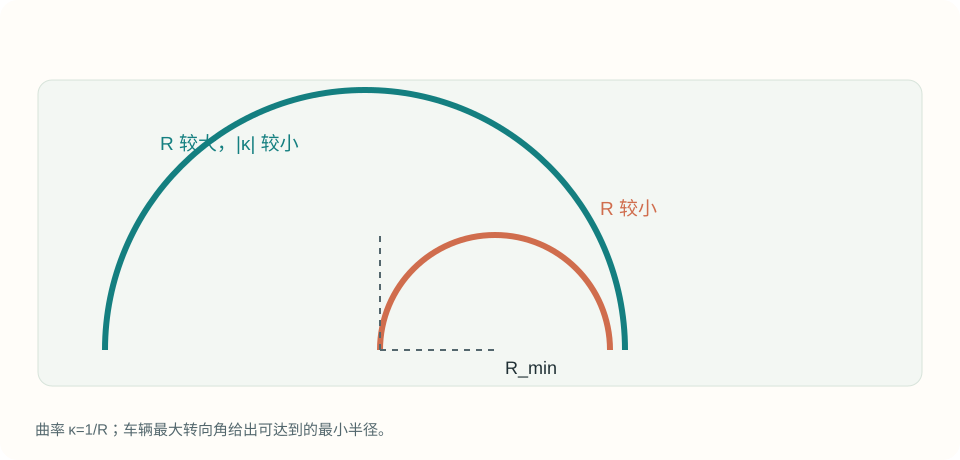
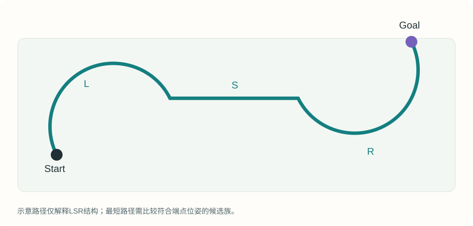
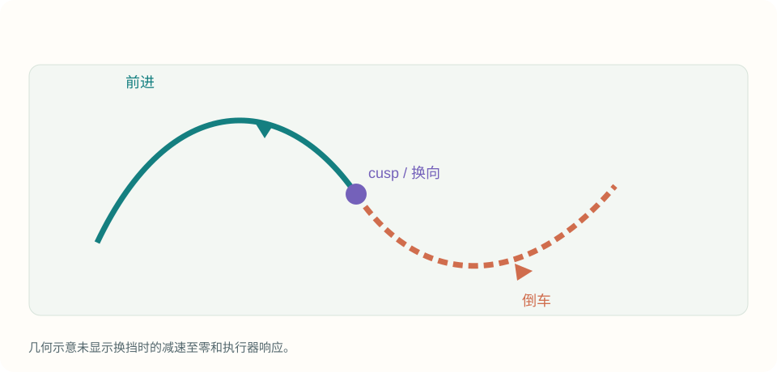

运动学约束：一条避障折线，汽车真的转得过去吗？
把朝向与曲率加入状态转移：从 Dubins 前进路径到 Reeds–Shepp 倒车路径，再理解运动基元如何把连续可行运动变成可搜索的图。
汽车的状态不只是平面坐标，而是带朝向的位姿
对于能原地旋转的点机器人，位置 (x,y) 有时足以描述路径搜索状态；但汽车、Ackermann 转向底盘或固定翼飞行器不能任意改变航向。它们的状态至少包含 (x,y,θ)。从同一个坐标出发，朝东与朝北的车具有不同的可行动作集合。
因此，几何折线即使避开障碍，也可能要求车辆在一个顶点瞬间改变朝向。运动学约束规划要把“能不能连续地转过去”作为状态转移的一部分，而不只是在二维地图上检查线段是否穿墙。
ROBOT MOTION PLANNING · 18
最小转弯半径就是曲率上限
对理想自行车模型，轴距为 L、前轮转角为 δ，几何曲率为 κ=tan(δ)/L。若最大转角为 δ_max，则最小转弯半径为 R_min=L/tan(δ_max)。等价地：
对无侧滑独轮车，在 v≠0 时 κ=ω/v。当车速趋近于零时这个比值不稳定，不能把它直接当作所有速度状态下的完整动力学模型。曲率约束还不同于横向加速度约束：给定速度 v，横向加速度约为 a_lat=v²|κ|，速度越高，可用曲率范围通常越小。
ROBOT MOTION PLANNING · 18

Dubins：只允许前进时的最短有界曲率路径
Dubins 在 1957 年研究了曲率受限、只能沿前进方向运动的平面车辆。起点和终点都包含位置与切向方向；给定最小转弯半径后，最短路径由左转弧 L、右转弧 R 和直线段 S 组成。经典候选族包括 LSL、RSR、LSR、RSL、RLR 与 LRL，从可行候选中选择总长度最小者。
Dubins 距离通常具有方向性：从位姿 A 前进到 B 的最短距离，不必等于从 B 前进到 A 的最短距离。不能在启发式搜索里未经验证就把它当作对称欧氏距离使用。
ROBOT MOTION PLANNING · 18

Reeds–Shepp：允许倒车后，路径会出现换挡尖点
Reeds 与 Shepp 在 1990 年把车辆的允许动作扩展到前进与倒车。车辆仍受最小转弯半径限制，但可以在某些段落倒车，路径上可能出现从前进切换到后退的 cusp。这会增加可用路径族，某些狭窄环境中能显著改变可达性与路线长度。
Reeds–Shepp 路径并不是把 Dubins 的直线段简单反向：带曲率的倒车弧在车辆姿态与有符号弧长下需要一致积分；换挡点还涉及速度从正到负的时序约束。允许倒车不代表机器人可以瞬间反向加速。
ROBOT MOTION PLANNING · 18

运动基元：把连续可行运动离散成可搜索的边
在状态格（state lattice）或 Hybrid A* 中，规划器将连续位姿离散成带朝向的状态单元，并预先定义一组运动基元：例如固定长度的左弧、直线、右弧，或不同速度/曲率组合。每个基元必须从一个状态出发，沿连续轨迹运动，再映射到目标状态格。
基元库需要兼顾覆盖率、连接性、转弯半径、端点量化误差和搜索规模。过少的基元可能使某些可行通道无法连接；过多的基元会扩大分支数和内存。碰撞检测应覆盖整个基元扫掠体，而不是只检查起终状态格中心。
积分一条有界曲率 LSR 轨迹，并单独展示倒车能力
Python 3.10+，仅用标准库。代码使用有符号弧长 s 和曲率 κ 积分常曲率基元，构造一条半径 2 的 LSR 路径，并验证端点、朝向与曲率上限。另用一个负弧长直线展示 Reeds–Shepp 允许倒车的运动方向。它不是完整 Dubins / Reeds–Shepp 最短路径求解器。
import math
def propagate(pose,primitives):
"""Primitive = (signed arclength s, curvature kappa)."""
x,y,theta=pose
trace=[pose]
for signed_length,kappa in primitives:
if abs(kappa)<1e-12:
x+=signed_length*math.cos(theta)
y+=signed_length*math.sin(theta)
else:
next_theta=theta+kappa*signed_length
x+=(math.sin(next_theta)-math.sin(theta))/kappa
y+=(-math.cos(next_theta)+math.cos(theta))/kappa
theta=next_theta
theta=(theta+math.pi)%(2*math.pi)-math.pi
trace.append((x,y,theta))
return trace
R_MIN=2.0
# L-S-R: left arc, straight segment, right arc.
dubins_primitives=[
(math.pi*R_MIN/2,1/R_MIN),
(2.0,0.0),
(math.pi*R_MIN/2,-1/R_MIN)
]
trace=propagate((0.,0.,0.),dubins_primitives)
assert all(abs(k)<=1/R_MIN+1e-12 for _,k in dubins_primitives)
assert all(abs(a-b)<1e-9 for a,b in zip(trace[-1],(4.,6.,0.)))
# A reverse straight primitive is admissible in Reeds-Shepp, not forward-only Dubins.
reverse_end=propagate((0.,0.,0.),[(-2.0,0.0)])[-1]
assert reverse_end==(-2.,0.,0.)
assert dubins_primitives[0][0]>0 and reverse_end[0]<0
print("LSR endpoint (x,y,theta):",trace[-1])
print("reverse primitive endpoint:",reverse_end,
"(illustrative Reeds-Shepp gear capability)")对常曲率段，若 κ 非零，位置更新可由圆弧解析积分得到；若 κ 为零则是直线。该示例只验证单段几何积分，没有进行障碍检测、六类 Dubins 候选比较、Reeds–Shepp 候选枚举或速度时间参数化。
几何有界曲率不代表轨迹可以立即执行
- 转向速率：即使曲率上限满足，曲率从 0 瞬间跳到最大值也可能超出转向执行器能力。
- 速度与加速度：轨迹长度没有给出速度曲线；换挡 cusp 附近需要速度过零。
- 碰撞足迹：路径中心线无碰撞不保证车身四角、车尾或挂载物无碰撞。
- 坡度和侧滑：真实车辆动力学可能要求横向加速度、摩擦圆或轮胎模型。
- 状态格分辨率：离散位姿端点误差和基元覆盖率会影响可达性与搜索质量。
在 OMPL 中，Dubins 与 Reeds–Shepp 分别有专门的 StateSpace 实现。使用它们时应检查转弯半径、距离方向性、插值和碰撞检查语义，而不是只因名字相同就假定与某个车辆平台的模型完全一致。